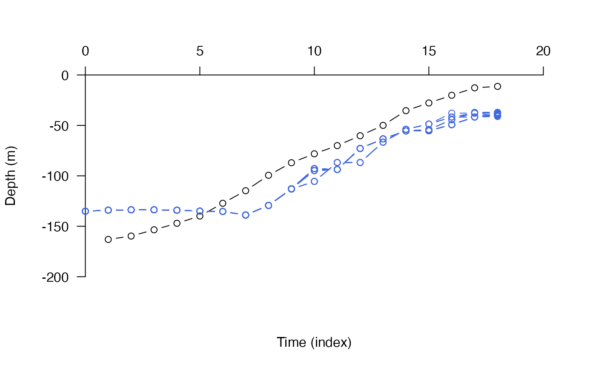
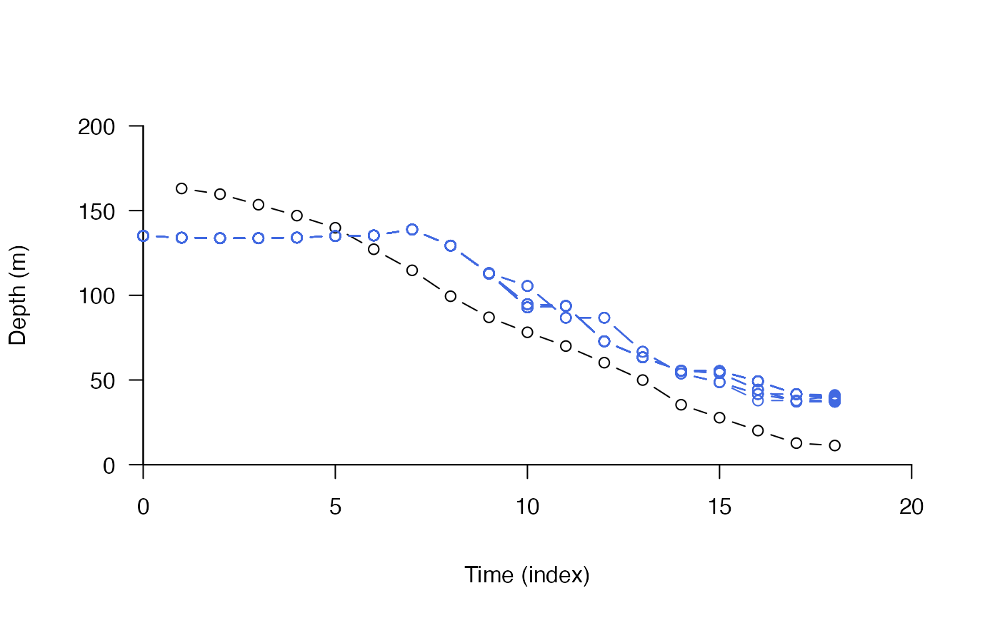
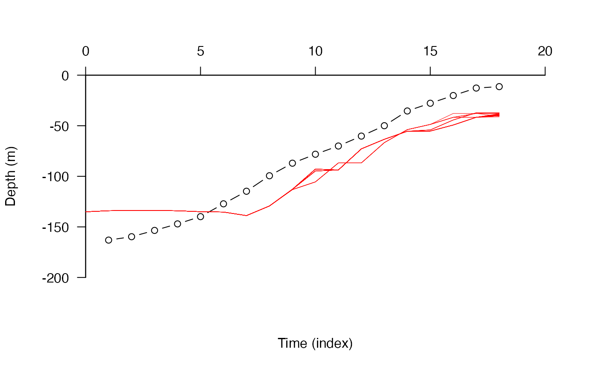

R/pf_analyse_path.R
pf_plot_1d.RdThis function plots the observed depth time series and the depth time series associated with each path reconstructed by the depth-contour particle filtering (DCPF) or acoustic-centroid depth-contour particle filtering (ACDCPF) algorithm.
pf_plot_1d( paths, archival, scale = -1, pretty_axis_args = list(side = 3:2), xlab = "Time (index)", ylab = "Depth (m)", type = "b", add_lines = list(col = "royalblue", type = "b"), prompt = FALSE, ... )
| paths | A dataframe containing reconstructed movement path(s) from |
|---|---|
| archival | A dataframe of depth (m) observations named `depth', as used by |
| scale | A number that vertically scales the depth time series for the observations and the reconstructed path(s). By default, absolute values for depth are assumed and negated for ease of visualisation. |
| pretty_axis_args, xlab, ylab, type, ... | Plot customisation arguments passed to |
| add_lines | A named list, passed to |
| prompt | A logical input that defines whether or not plot the observed depth time series with each reconstructed depth time series on a separate plot, sequentially, with a pause between plots ( |
The function returns a plot of the observed and reconstructed depth time series, either for all paths at once (if prompt = FALSE) or each path separately (if prompt = TRUE).
Observed and reconstructed depth time series can differ due to measurement error, which is controlled via the calc_depth_error function in the DC and ACDC algorithms (see dc and acdc).
pf implements the pf algorithm. pf_plot_history visualises particle histories, pf_plot_map creates an overall `probability of use' map from particle histories and pf_simplify processes the outputs into a dataframe of movement paths. pf_plot_1d, pf_plot_2d and pf_plot_3d provide plotting routines for paths. pf_loglik calculates the log-likelihood of each path.
Edward Lavender
#### Implement pf() algorithm # Here, we use pre-defined outputs for speed paths <- dat_dcpf_paths archival <- dat_dc$args$archival #### Example (1): The default implementation pf_plot_1d(paths, archival)#### Example (2): Plot customisation options, e.g.: pf_plot_1d(paths, archival, scale = 1, pretty_axis_args = list(side = 1:2))pf_plot_1d(paths, archival, type = "l")#### Example (3): Plot individual comparisons if(interactive()){ pp <- graphics::par(mfrow = c(3, 4)) pf_plot_1d(paths, depth, prompt = TRUE) graphics::par(pp) }